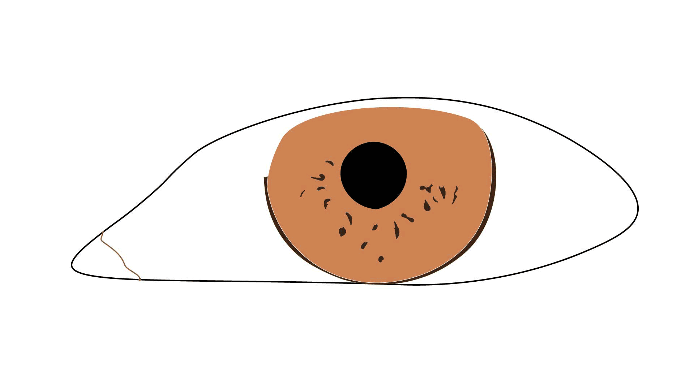
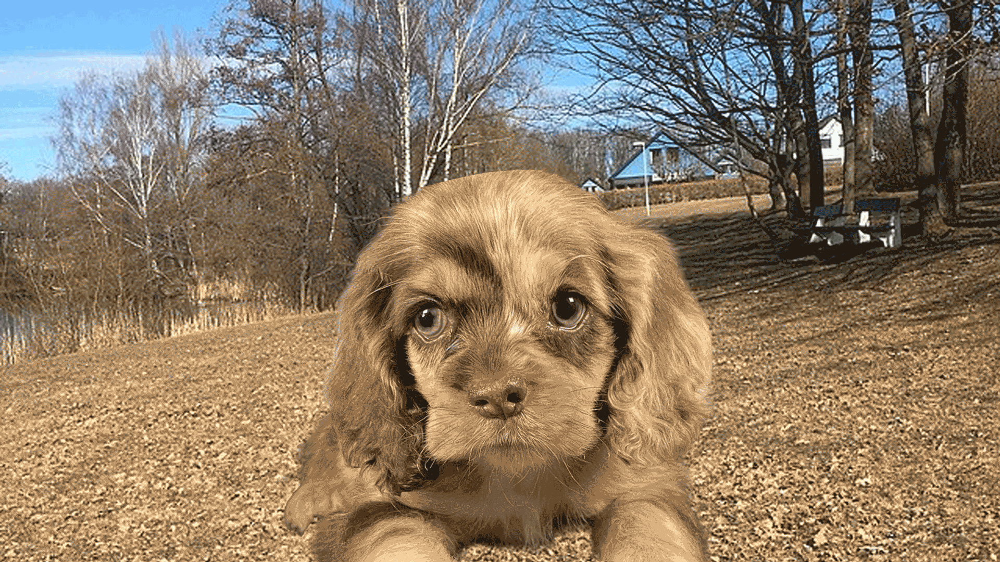

For the first GIF animation, I created a blinking eye animation using previous artwork that I designed in Adobe Illustrator and then imported into Photoshop. In my original artwork, the eye had eyelashes, so I removed them so the eye can be seen more clearly. I used separate layers of the eye illustration so I could control the animation more easily. I used the Timeline window in Photoshop to create a frame animation and moved the eyelid images into position across several frames to show my eye opening and closing. I made sure to keep my loop set to forever and kept the eye movement simple so the loop would stay smooth. I also tested different speed settings to see which one worked best and made the blinking look more natural.

For the second GIF animation, I created a cut-up cinema animation using a photograph and the Puppet Warp tool in Photoshop. I decided to animate a puppy tilting its head from left to right. First, I removed the background by selecting the dog and using a layer mask to separate it from the background. I also converted the photo into a smart object before using the Puppet Warp tool. I created three layers: left tilt, straight, and right tilt. Then, using the Puppet Warp tool, I selected certain parts of the image to make sure it did not change too much, other than making it look like the dog was tilting its head left or right. After that, I used the Timeline in Photoshop to create a frame animation and tested different speeds until the animation looked smooth.
This was my first time ever animating anything and I think it was super interesting and helpful to learn the behind the scenes process of creating animations with individual frames. I enjoy watching animations, and I always thought it was something very complicated and difficult to do, but learning how to create GIFs showed me that it can be simple and easy to understand. This homework helped me understand the basics behind animation by breaking movements into individual frames. The blink-eye animation showed me that visual changes, small or large, can create expression and movement, even something as simple as opening and closing an eye. The cut-up cinema was a bit more challenging but still interesting, because it showed me how photographs can be changed into motion using Photoshop and Puppet Warp. Timing is also very important for animations. Changing the frame speed by a small amount can be a huge difference in how natural the movement will look. Finally, this assignment gave me a better understanding of frame animation and helped me appreciate the importance of timing and motion, along with the process of creating GIFs.